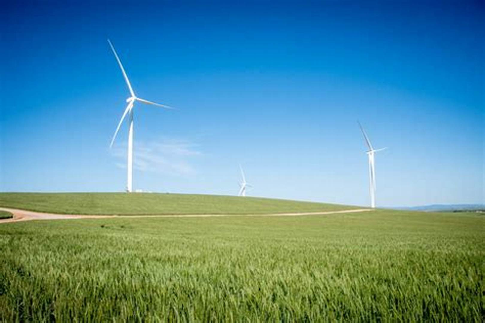
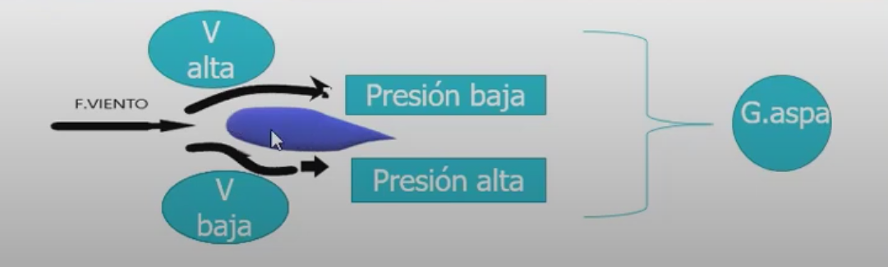
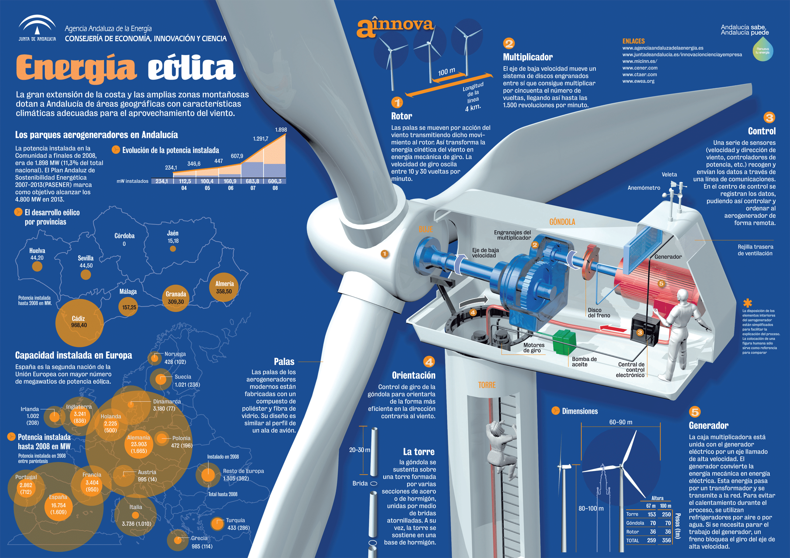

ENERGÍA EÓLICA
¿Qué es?
La energía eólica es una forma de energía renovable que se obtiene mediante la conversión
de la energía cinética del viento en electricidad. Este proceso se realiza utilizando aerogeneradores
o turbinas eólicas, que son estructuras equipadas con aspas que capturan la energía del viento
y la convierten en energía mecánica. Esta energía mecánica se transforma luego en electricidad a
través de un generador.

¿Cómo funciona?
La forma de las aspas, similar al ala de un avión, crea una diferencia de velocidad entre la parte superior
e inferior, generando presiones que impulsan el movimiento giratorio. La fuerza de arrastre o retención,
contraria a la sustentación, actúa en sentido opuesto al movimiento y es crucial para el funcionamiento del
generador. Este fenómeno se basa en principios físicos que involucran presiones y velocidades del viento.
En el contexto de un generador, estas fuerzas dan lugar al giro de las aspas, contribuyendo a la generación de
energía.

Una vez que las aspas están en movimiento, se inicia internamente una secuencia de procesos ordenados:
- CONEXIÓN AL ROTOR: Las aspas están conectadas a un rotor en el interior del generador.
Cuando las aspas giran debido al viento, el rotor también gira.
- GENERACIÓN DE ELECTRICIDAD: El rotor está conectado a un generador eléctrico. El movimiento
rotativo del rotor dentro del generador induce corriente eléctrica en los conductores del generador, siguiendo los principios de la
inducción electromagnética de Faraday.
- TRANSFORMACIÓN DE LA ENERGÍA: La corriente eléctrica generada en el generador es inicialmente de tipo
alterna (AC). Sin embargo, para la mayoría de las aplicaciones, como el suministro a la red eléctrica, es necesario convertir esta corriente
alterna en corriente continua (DC) mediante un dispositivo llamado rectificador.
- INVERSOR: En algunos sistemas, se utiliza un inversor para convertir la corriente continua (DC) en
corriente alterna (AC), si la carga o la red eléctrica requiere corriente alterna.
- CONEXIÓN A LA RED ELÉCTRICA O ALMACENAMIENTO: La electricidad generada puede ser utilizada directamente
en el lugar donde se encuentra el generador o puede ser transferida a la red eléctrica. En algunos casos, se emplean sistemas de almacenamiento de
energía, como baterías, para almacenar la electricidad generada y usarla cuando sea necesario.

Ventajas
- RENOVABLE Y SOSTENIBLE: La energía eólica es renovable ya que se deriva de la radiación solar y la rotación de la Tierra, siendo una fuente sostenible a largo plazo.
- BAJAS EMISIONES DE GASES DE EFECTO INVERNADERO: La generación eólica produce bajas emisiones de gases de efecto invernadero, contribuyendo a la mitigación del cambio climático y reduciendo la huella de carbono.
- REDUCCIÓN DE LA DEPENDENCIA DE COMBUSTIBLES FÓSILES: Diversifica la matriz energética, disminuyendo la dependencia de combustibles fósiles y mejorando la seguridad energética.
- BAJOS COSTOS OPERATIVOS Y DE MANTENIMIENTO: Aunque la inversión inicial puede ser alta, los costos operativos y de mantenimiento de las turbinas eólicas
- GENERACIÓN DESCENTRALIZADA: Permite instalaciones en una variedad de ubicaciones, desde grandes parques eólicos hasta turbinas residenciales, facilitando la generación descentralizada y la autonomía energética.
- CREACIÓN DE EMPLEO Y DESARROLLO LOCAL: La industria eólica genera empleo en diversas áreas y contribuye al desarrollo económico local.
- REDUCCIÓN DE LA CONTAMINACIÓN ACÚSTICA Y DEL AIRE: La energía eólica tiende a generar menos contaminación acústica y del aire en comparación con otras formas de generación de energía.
- EFICIENCIA MEJORADA Y AVANCES TECNOLÓGICOS: Los avances tecnológicos han mejorado la eficiencia de las turbinas eólicas, llevando a diseños más eficientes y rentables.
DESVENTAJAS
- VARIABILIDAD Y NO CONTINUIDAD: La generación de energía eólica es variable y no constante debido a la dependencia del viento, lo que puede resultar en una producción intermitente de energía.
- NECESIDAD DE UBICACIONES ESPECÍFICAS: Las turbinas eólicas requieren vientos consistentes y adecuados, limitando las áreas geográficas donde se pueden instalar eficientemente.
- IMPACTO VISUAL Y AMBIENTAL: La presencia de parques eólicos puede afectar visualmente el paisaje y tener impactos ambientales, incluyendo alteraciones en hábitats de fauna y ruido.
- NECESIDAD DE ALMACENAMIENTO O FUENTES COMPLEMENTARIAS: La variabilidad en la producción puede requerir sistemas de almacenamiento o fuentes de energía adicionales para compensar periodos de baja generación.
- COSTOS INICIALES Y ESPACIO REQUERIDO: La inversión inicial en la construcción de parques eólicos puede ser significativa, y las turbinas eólicas ocupan grandes extensiones de tierra, generando conflictos de uso del suelo.
- IMPACTO EN AVES Y MURCIÉLAGOS: Las turbinas eólicas pueden representar un riesgo para aves y murciélagos, colisionando con las aspas en movimiento.
- REQUIERE INFRAESTRUCTURA DE TRANSMISIÓN: La generación en áreas remotas puede necesitar infraestructura de transmisión costosa para llevar la electricidad a los centros de consumo.
- DESAFÍOS TECNOLÓGICOS Y DE ALMACENAMIENTO: Persisten desafíos tecnológicos, como el almacenamiento eficiente de la energía, que deben abordarse para mejorar la viabilidad de la energía eólica.
MATERIAL TEÓRICO, PLANTEAMIENTO DE ECUACIONES
REALIZAR CÁLCULOS